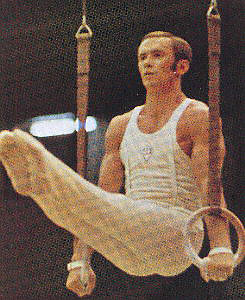

Mikhail Voronin (USSR)
1966 World AA Champion
1967 and 1969 European AA Champion

|
Medal Total |
Voronin was born in Moscow on March 26, 1945 in Moscow and trained at the Dinamo club. His first coach was Nikolai Balashov, then Vitaly Belyaev, and finally Evgeny Korolkov (6th AA at the 1952 Olympics). Voronin married (and later divorced) fellow gymnast Zinaida Druzhinina. The two had a son, Dmitry. After retiring in 1972, Voronin worked at Dinamo, first as a coach and eventually as the club's director. He died on May 23, 2004.
Competition Results
1961
USSR Championships (Class I): 2nd AA
1963
All-Union Schoolchildren's Spartakiad: 1st Team, 1st AA (master program)
1964
Dinamo Championships: 1st AA
Moscow Championships: 1st AA
USSR Championships: 4th AA
USSR Cup: 13th AA
1965
Jr. Friendship Tournament (Druzhba): 1st AA, 1st PH, 1st R, 1st PB, 1st HB,
3rd FX, 5th V
USSR Championships: 2nd AA
USSR Cup: 9th AA
USSR-JPN Dual Meet: 2nd AA, 3rd PH, 3rd RG, 3rd PB, 3rd HB
1966
FIN-USSR Dual Meet: 1st Team, 1st AA
FRG-USSR Dual Meet: 1st Team, 2nd AA
USSR Cup: 1st AA, 1st FX, 1st R, 2nd PB, 4th HB, 6th PH
World Championships: 1st AA, 1st R, 2nd Team, 2nd
PH, 2nd PB, 4th HB, 5th V
1967
European Championships: 1st AA, 1st PH, 1st R, 1st
PB, 2nd HB
USSR Championships: 1st AA, 1st PH, 1st R, 1st PB
1968
Olympic Games: 1st V, 1st HB, 2nd Team, 2nd AA,
2nd R, 2nd PB, 3rd PH
USSR Championships: 1st AA
1969
European Championships: 1st AA, 1st R, 1st PB, 2nd
V, 3rd PH, 5th HB
USSR Cup: 1st AA, 1st R, 1st PB, 2nd FX, 2nd PH, 3rd V, 5th HB
1970
All-Union Individual Event Competition: 1st R
Dinamo Championships: 1st AA
USA-USSR Dual Meet: 1st Team, 10th AA
USSR Championships: 1st AA
USSR Cup: 1st AA, 1st PH, 1st R, 2nd FX, 2nd PB, 2nd HB, 4th V
USSR-FIN: 1st Team, 1st AA, 1st RG, 1st V, 1st HB, 2nd FX, 2nd PH, 2nd PB
World Championships: 2nd Team, 3rd R, 4th AA, 5th HB
1971
European Championships: 2nd AA
USSR Championships: 1st AA, 1st R, 1st HB, 3rd FX, 3rd PB, 4th V
1972
Olympic Games: 2nd Team, 2nd R, 5th PH, 12th AA
USSR Championships: 2nd AA
USSR Cup: 3rd AA, 1st R, 4th PB, 6th HB, 8th V
USSR-HUN: 1st Team, 1st AA
This page was created on January 20, 2002 and
was last updated on March 26, 2026.
© Gymn Forum